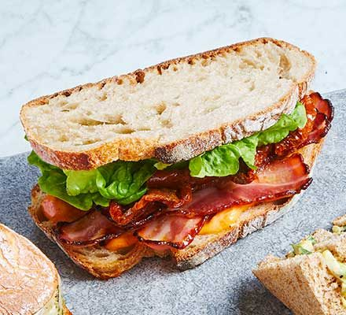

BLT

Description
Bacon, lettuce and tomato in a white bread sandwich
Ingredients
- 2 slices of white bread
- 5g salted butter, spreadable
- 2 rashers of unsmoked bacon
- 4 slices of fresh tomato
- fresh lettuce leaf
Steps
- Cook the bacon until crispy
- Spread the butter on one side of each piece of bread
- Place fresh lettuce on top of one slice
- Place cooked bacon on top of the lettuce
- Place sliced tomato on top of the bacon
- Top with the second slice of bread